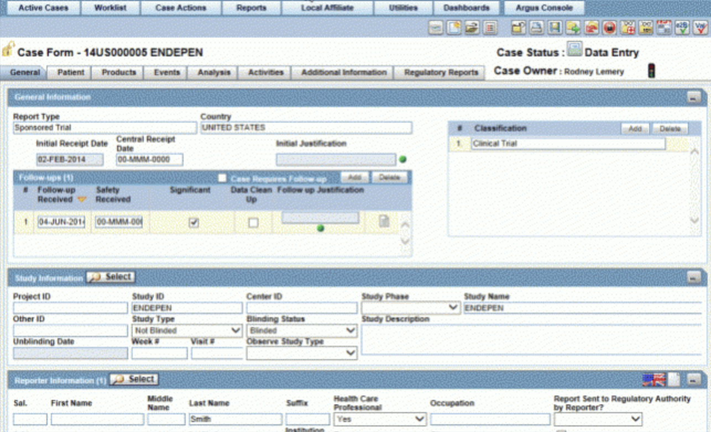
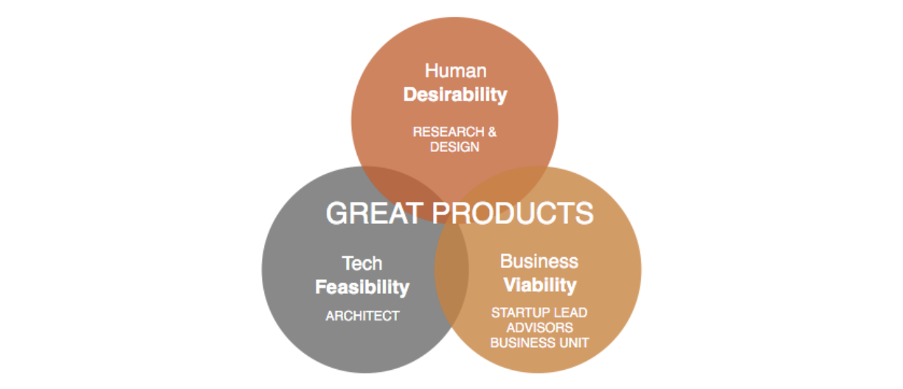

Problem
If you've ever taken a prescription drug, you might know that if you squint at the label you'll find some warnings about possible adverse side effects. When these side effects occur, they have to be reported to medical care providers and pharma companies, so they can monitor these events and route them to the appropriate management teams. The teams that process and monitor these events are called PharmacoVigilance (PV) teams. Cognizant historically has provided adverse event case processing as a service to pharma companies to help manage the volume of cases coming in.
Over time, a few major issues and inefficiencies emerged, causing data issues and leading to major consequences downstream for pharma companies:
- safety failure in clinical trials
- lawsuits
- opportunity loss
- reputation damage
Cognizant leadership gave us six months to dive in to this space, and our team the accelerator was tasked with partnering with these PV experts, who we called Startup Leads (SL’s) to create a new software platform to help address them. If we could prove that we had a concept that would solve these problems for users, it would be give leadership confidence to continue to invest in this space through a Cognizant software product.
Note: this write-up is purposefully vague in order to explain my process without sharing any IP. Thanks for understanding.
Process
Problem Validation > Data Collection > Synthesis > Workshop > Prototype > Testing > Recommendations
The first step was to meet with our SL’s and figure out what we knew, and what we didn’t. I decided that the best way to start that conversation was through a user types exercise. I created a worksheet to help the team start to collaboratively think through the users’ current process which we were trying to optimize. This naturally revealed gaps and provided a great baseline for identifying what we needed to focus on during our research.
The long-term idea for this product is that it would be an end-to-end case management platform which would serve several user types, as well as team leads and admins in all of these groups. The team realized it would be best to focus on two core groups, which we’ll call A and B, because they have the biggest impact and potential of improvement of this workflow. For those two groups, we created persona assumptions, which gave us things to validate, and helped us to understand what gaps we had that could be addressed with user research.
Problem Validation > Data Collection > Synthesis > Workshop > Prototype > Testing > Recommendations
Although we had a good amount of subject matter expertise informing our product direction, we wanted to validate these issues with additional experts to add depth to our team's assumptions. To begin, we conducted remote interviews with a handful of users from each user type. The focus of these conversations was to understand how these folks are working today, with what tools, and what the greatest pain points are in their current workflows. The interview questions were crafted with these outcomes in mind. Each interview required the following steps:
The interview questions were crafted with these outcomes in mind. Each interview required the following steps
- Reached out to team leads to request time from users
- Coordinated times and schedules with users all over the globe
- Conducted interview via Webex
- Interview debrief with designer
Problem Validation > Data Collection > Synthesis > Workshop > Prototype > Testing > Recommendations
During the hour-long debriefs, the designer and I re-listened to the interviews and quotes and observations on stickies, where they mapped to the questions that we were asking. This gave us data points which we then clustered into themes. When these themes had several data points, we would eventually use these to turn them into insights, in order to make sense of this data for our audience for the readout.
The first major outcome was that we validated the assumption we had going in which was:
- The collaboration between User Type A and User Type B has a lot of potential to be growth focused and smooth, but it currently can be negative and clunky. This can lead to unhappiness, a loss of productivity, or even turnover.
To go a level deeper, we mapped out each of those workflow steps for each user type.
More broad than the workflow steps, we also learned some specific areas of opportunity to make the user experience better. The major themes were:
- The sense of support is very present among associates working on clients who are present in the same location, which makes them feel happy and motivated. We have an opportunity to design for that same sense of teamwork even for clients with distributed associates.
- Clients have incredibly high expectations from case processing associates, but both the issues with data quality upfront, and issues with the clients’ processes themselves, can be barriers to getting work done as well as possible.
- The manual logging of errors and corresponding with associates to fix them is frustratingly inefficient. Everyone sees it, but they don’t have a way to fix it.
- Users want a tool that puts all of their work in one platform, and solves for the inefficiency in their job. This will not only make them happy, but increase their efficiency, thereby enabling customers of this tool to see even more of a savings than automation alone could provide.
One of the current systems currently being used in these workflows. Yikes.
Problem Validation > Data Collection > Synthesis > Workshop > Prototype > Testing > Recommendations
As with most projects at Accelerator, we kicked off the prototyping phase with a milestone called “inception”. This is where all startup leads, PM’s designers, and developers working on the project get together for a day and develop the idea, as well as scope the MVP. What was wonderful about this particular inception was that for the first time, the Accelerator invested in upfront user research, so we were able to have a productive discussion about users with data to drive consensus.
Small groups enabled stakeholders to process this information in bite-sized chunks. Some of the activities included:
- Persona Development- Co-create artifacts that describe user groups, in order to establish a shared vocabulary about the discrete roles.
- User Flows - For each persona, collaboratively document the workflows and decisions involved in completing their jobs
- Sketches - Visualize what the solution that supports these user flows, could look like
- Above the Line / Below the Line - Brainstorm the set of features required to build the vision for the product, and from there, prioritize the set of features which should be included in the MVP.
Interacting with our startup leads in this way helped them to empathize not only with the users, but also with the design process, and how many decisions have to be made to turn a concept into a product. We came out of inception with a shared understanding of the user personas, user flows, some possible screens, and a shared short term and long term product vision. Importantly, we also renewed our vows to the two initial user types scoped, A and B.
Problem Validation > Data Collection > Synthesis > Workshop > Prototype > Testing > Recommendations
After inception, the startup leads shifted their focus to business development activities while our product team got started on our prototype This was a small product team, which included myself, a designer, and an architect. The architect worked validate some of the technical feasibility for these products, while the designer and I worked to sketch out flows that addressed the features we'd prioritized for our first version.
Side note - the designer I worked with was a developer in a past life, so we decided to experiment with sketching out the prototype design and then going straight to coding a clickable prototype using our design system, Bonsai (which is a fork of IBM's Carbon.) This worked really well, we were able to simulate super realistic interactions on the prototype, and as a result, the feedback wasn't around content or bugs, but on the product ideas itself, which is exactly what we were looking for at this phase.
Problem Validation > Data Collection > Synthesis > Workshop > Prototype > Testing > Recommendations
Once the prototype was ready, we started putting it in front of users. We recruited internal users who were currently in the role of Case Processor and Quality Reviewer. Ideally we would have been able to test with external users, but there were too many legal and timeline obstacles to make that possible at this phase, so was flagged as a risk. The testing itself took place over a few weeks.
Our goal for this test was to identify some low hanging fruit areas of opportunity to make the prototype more believable on pitch day, and also document areas of the app that need further exploration or design, if this product were to get funded.
To get the most out of these tests, the interviews took place in three parts. I’ve included some example questions for clarity.
- Generative Questions - What is your working environment like? What tools or software do you use in your job? How so you measure your success?
- Gut Reactions to Pages - What is your first reaction to this tool? What is going through your mind as you look at this? How does this compare to your expectations? What can you do here? What is the first thing you would do?
- Task-Based Prompts - If this is your dashboard, how productive have you been today? Find a case that matches x criteria? What do you expect the “follow up” button to do?
Problem Validation > Data Collection > Synthesis > Workshop > Prototype > Testing > Recommendations
Prototype RecommendationsFrom the usability rounds, there were clear changes that needed to be made to the prototype. For the ones that were more lightweight to implement (like content, language, or design changes) we could easily incorporate those into the design. We used the workflow steps to give us a way to organize the data we gathered, and our recommendations for them.
For each workflow step we captured:
- User’s reaction with quotes
- Design recommendations
- Whether we were able to implement the recommendation by pitch day.
Ultimately, our team was responsible for articulating the user opportunity and signaling risks to the funders, so that they could make a decision about whether to find this venture. We used a key opportunity statement to help together the problems found from our upfront research with how we approached our product solution.
It would be dishonest to say that our research covered the product space end to end. We simply didn’t have the time or the infrastructure. It was crucial that we framed in our product plan, exactly where these gaps where and emphasize why it would be important to include UXR in the future product roadmap.
What I Learned
Users of enterprise software in this space have very low expectations. It was sometimes like pulling teeth to get them to provide critical feedback, because these users were so accustomed to shitty user experiences and just accepted them as part of the job. One of the strategies I picked up on is to just acknowledge the positive things, and then ask specifically for negative. “What do you dislike about that?” or “If there were one thing you could change…” I also learned about how to capture information in a way that is relevant to the short term and the long term. To de-risk a venture with data is a different activity than to optimize a user experience, and we had to do both. When I would frame my scripts I always had to acknowledge that upfront so I could ensure I was getting both problem sets addressed.